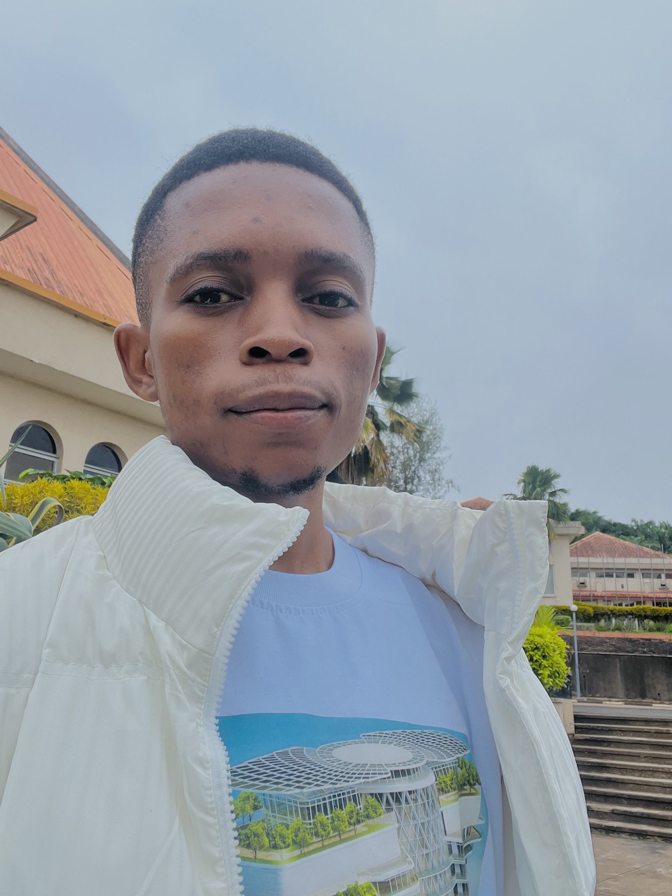

Oscar Obetta

Summary
As a full-stack web developer, I'm proficient in designing intuitive user interfaces, implementing interactive client-side functionality using technologies like HTML, CSS, and JavaScript.
Additionally, I have a solid understanding of server-side technologies such as databases, server-side programming languages, and frameworks.
Education
- Bachelor of Science, Industrial Technical Education/VTE
University of Nigeria, Nsukka.
- Icon Contemporary Special College (High School).
Enugu State, Nigeria.
- Model 1 Primary School.
Enugu State, Nigeria.
Work Experience
- Internship - Ace ICT-Educational Enterprise.
June 2019 - August 2020
- Ability to administer solutions to system problem
- Ability to communicate though graphic design
- Customer Service Representative - KC Gaming Network
May 2016 - February 2017
- Time Management
- Accountability towards money.
- Credible attitude towards pointers.
Skills
- Soft Skills
- Adaptability
- Accountability
- Resilience and tenacity
- System administration
- Team Collaboration
-
Hard Skills
- HTML
- CSS
- JavaScript
Awards and Certifications
Others